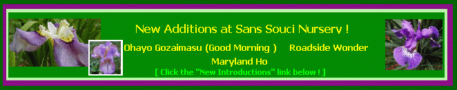
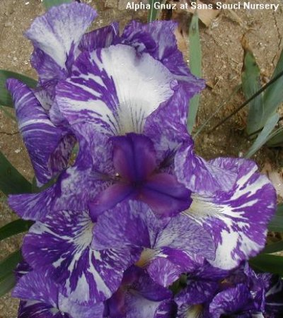
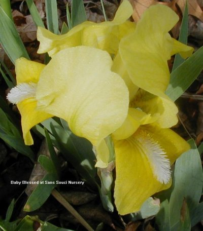
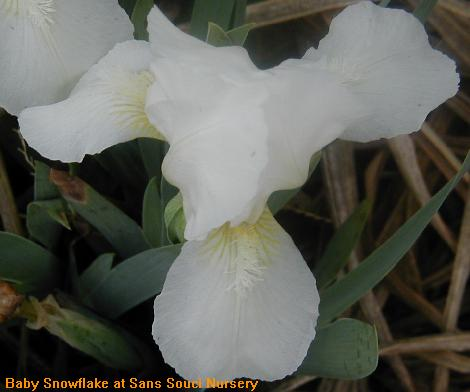
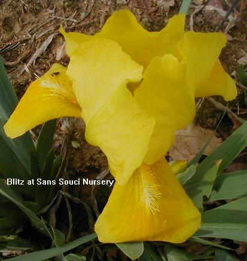
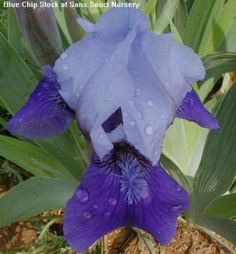
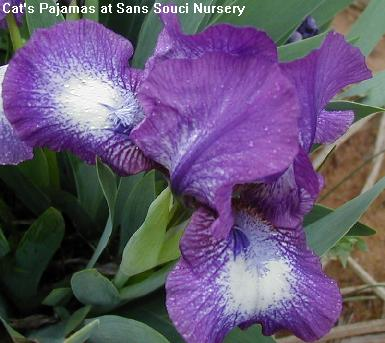
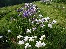

Sans Souci Nursery, LLC
Specializing In Irises
3819 Beatty Road
Monkton, Maryland 21111
Phone :(410) 557-0250
E-Mail:
lbh0251@msn.com

Any 3 for $25.00!
An additional 3 plants of our choice will be added to all orders of
$100. Should you have a preference with regard to these 3 free items, we
will be more than happy to consider your selections as to their availability.
Miscellaneous Irises
Although we specialize in bearded rebloomers, Japanese and Siberian irises, we
grow a wide selection of Louisiana, spurias, and versicolors. We also grow a
wide range of other species including pseudacorus cultivators, tectorum
(Japanese roof iris) laevigatas, setosas and Siberian species (typifolia,
sanguinea). In addition, we grow serveral inter-species cultivators
(pseudacorus-ensata, Virginica-versicolor, Laevigata-versicolor,
ensata-versicolor hybrids).
Click here for
A discussion of Iris Terminology

Alpha Gnuz
-
This Kasperek IB hybrid is not a stable color and frequently breaks down as
seen on this photograph where one fall's color pattern is split, yet it's
absolutely gorgeous!
|

Baby Blessed
-
SDB (Zurbrigg 1979) has a small white spot on falls and a
cream colored beard.It is an excellent grower and reliable rebloomer.
|

Baby Snowflake
-
SDB (Peterson, Adelaide 1962) white self with
a white beard with a hint of green at the haft. It has a good growth and reliable rebloom
in Sept through October
|

Blitz -
SDB (Weiler, John 1988) yellow standards with dark velvety yellow falls and a yellow
beard. Blitz has a sweet fragrance and is an excellent grower with a reliable rebloom in late
Sept-November. For two years it has bloomed in early December at Sans Souci
|

Blue Chip Stock
-
Bred by Paul Black and registered in 1998 this lovely MTB (22 inches) is an early bloomer
with light to medium standards blue, with a darker midrib. The style arms are
light to medium blue with dark violet blue falls paling toward the edges. The
beards are blue, and old gold in throat. The petals are ruffled and it has a
slight musky fragrance.
|

WildCat Pajamas
-
SDB ( 14 inches) bred by O. D. Niswonger and registered in 1995, this is a mid season bloomer
with purple, small standards with a white central area. The style arms are
purple and the falls have a white ground, heavily marked with purple. The beards are medium blue.
It is floriferous and grows well but does NOT rebloom.
|
Also on sale!!
See our Japanese Stock
See our
Louisianas Stock
See our Rebloomer Stock
See our Siberian Stock
See our Versatas Stock
Irises planted early in season
- as seen in the enlarged photo- will produce
huge clumps compared to those planted later in the season. Isn't
this the time for you to order plants for early spring delivery?

[Click the image above to enlarge to full size.]
|
|